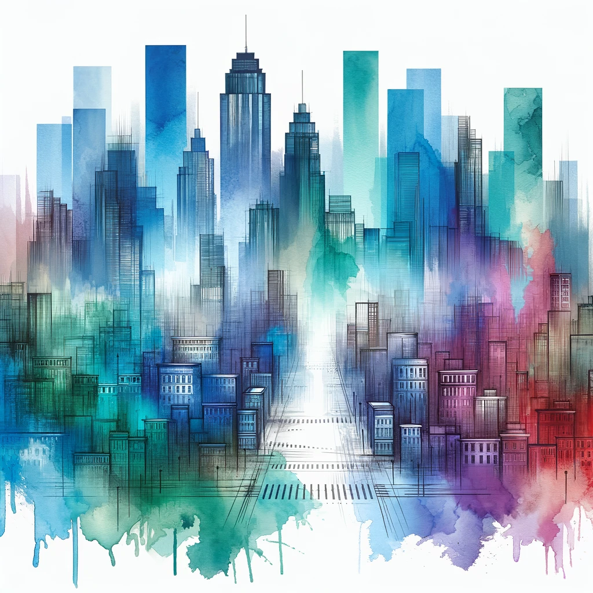
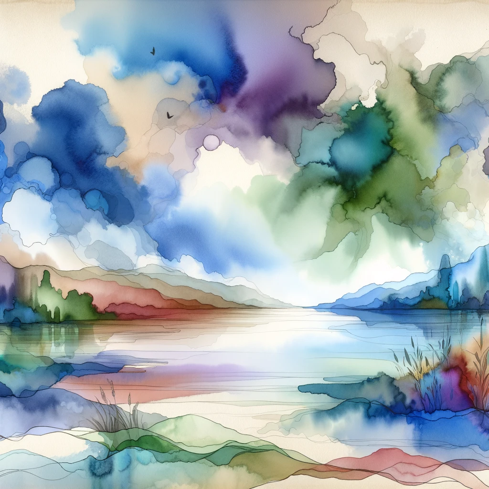

Reverse Coloring
The Colors are Set - Your Lines Await.
Just Print and Start Outlining.

Whispers of the Deep
An abstract watercolor composition, rich in cool colors like blues, greens, and purples, with a hint of warm tones.

Metropolitan Mosaic in Twilight
View of a city at dusk or dawn, where the details are left to the viewer's imagination.

Tranquil Hues of Serenity
A canvas that invites artists to superimpose their own elements or detail.